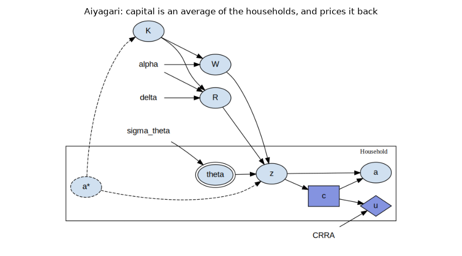
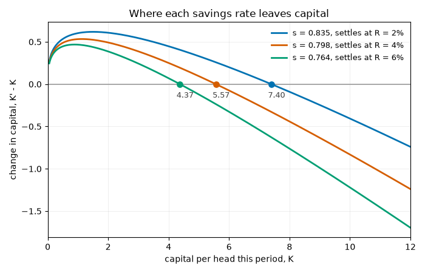
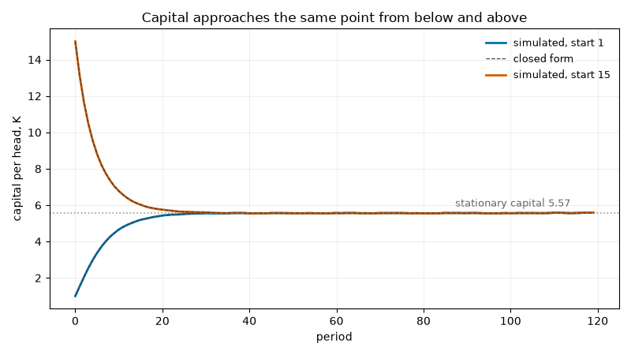
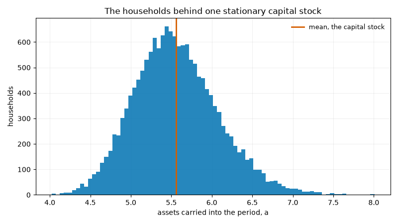

Note
Go to the end to download the full example code.
Aiyagari: Households That Price Their Own Capital¶
An economy’s capital is what its households have saved. How much they save depends on the interest rate and the wage, and those depend on how much capital there is. Each household is too small to move the prices, but between them the households set those prices, so any account of their saving has to close that loop. Aiyagari (1994) [1] closed it for an economy of many households, each facing income risk it cannot insure, and asked how much such an economy saves.
This page builds that economy and takes the households’ saving as given: every household saves the same fixed fraction of what it has. The rule is supplied rather than solved, and no household is choosing anything. What remains is the loop itself, from assets to capital, from capital to prices, and back to assets. Under a fixed rule it has a closed form, and we use the closed form to check the simulation period by period.
This page does four things:
states the model and the timing that makes capital an average of the households,
derives where capital settles under a fixed savings rate,
simulates the economy from two starting points and checks every period against the closed form, and
looks at the households underneath the average, which hold very different amounts even though the average follows a formula.
The Model¶
Notation¶
One value per household \(i\):
Shock: \(\theta_i\), the labour endowment drawn this period, which has mean one.
Arrival state: \(a_i\), the assets the household carried in from last period.
Cash on hand: \(z_i\), labour income plus assets and the interest on them.
Control: \(c_i\), consumption, the household’s one decision.
Payoff: \(u_i\), the utility of consuming that much.
One value for the whole economy:
Capital: \(K\), capital per head, the average of the households’ assets.
Prices: \(R\), the net interest rate, and \(W\), the wage per unit of labour endowment.
The equations¶
Output is produced from capital and labour by \(Y = K^{\alpha} L^{1-\alpha}\), and each factor is paid its marginal product. Every household supplies its endowment whatever the wage, and the endowments average one, so labour per head is one and \(L\) drops out of both prices. A fraction \(\delta\) of capital wears out each period, and the interest rate is the marginal product of capital net of that:
A household’s cash on hand is its wage income plus its assets with interest. It consumes some of that, and what it does not consume is what it carries into next period:
The consumption decision is taken on cash on hand alone. The endowment is drawn independently each period. In [1] it is persistent, and the persistence matters once households choose their saving; under the fixed rule of this page it leaves the aggregate’s law of motion unchanged.
The timing¶
The market clears first, on the assets the households arrived with, and the households then draw their endowments and decide. So \(a\) is read before it is assigned in a period, which makes it an arrival state, and each period of a simulation is one round of the aggregate’s law of motion.
References¶
import matplotlib.pyplot as plt
import numpy as np
import skagent.models.aiyagari as aiyagari
from skagent.simulation.monte_carlo import Simulator
from skagent.utils import plot_block_diagram
HOUSEHOLDS = 2000
PERIODS = 120
# The dispersion of the log endowment. An endowment drawn this way has a
# standard deviation of about 0.31 around its mean of one.
SIGMA = 0.3
# Colours chosen for colour-vision deficiency: blue, vermilion, bluish green.
SERIES = ["#0072B2", "#D55E00", "#009E73"]
def simulate(rate, start, periods=PERIODS, households=HOUSEHOLDS, samples=1):
"""Simulate *samples* economies under a fixed savings rate, from a common start."""
sim = Simulator(
aiyagari.aiyagari_calibration(size=households, sigma=SIGMA),
aiyagari.aiyagari_block,
{"c": aiyagari.savings_rule(rate)},
{"a": start},
sample_count=samples,
T_sim=periods,
seed=0,
)
sim.initialize_sim()
return {symbol: np.asarray(path) for symbol, path in sim.simulate().items()}
The model as the library sees it¶
The model is two blocks. The market block computes capital and the two prices. The household block draws the endowment, forms cash on hand, takes the consumption decision and carries the remainder forward. Their equations, in the order they run:
K = a.mean()
R = alpha * K ** (alpha - 1) - delta
W = (1 - alpha) * K ** alpha
z = theta * W + (1 + R) * a
c = Control(z)
u = np.log(c) if CRRA == 1 else c ** (1 - CRRA) / (1 - CRRA)
a = z - c
The household block is declared inside an entity class, household, so each
of its variables has one value per household. The market block is outside the
class, so its variables have one value for the whole economy. An equation that
reads out of the class into a variable without that axis is a crossing, and
capital is the only one in the model:
for symbol, readings in aiyagari.aiyagari_block.crossings().items():
for argument, entities, _ in readings:
print(f"{symbol} reads {argument} across {', '.join(sorted(entities))}")
for symbol, control in aiyagari.aiyagari_block.get_controls().items():
print(f"decision {symbol} agent {control.agent} observes {control.iset}")
K reads a across household
decision c agent household observes ['z']
The model as a graph¶
Each node of the household class stands for every household at once. The edges leaving the class run into capital, and the edges returning to it are the two prices, which every household reads.
plot_block_diagram(
aiyagari.aiyagari_block,
"Aiyagari: capital is an average of the households, and prices it back",
calibration=aiyagari.aiyagari_calibration(size=HOUSEHOLDS, sigma=SIGMA),
figsize=(9, 5),
)

A fixed savings rate, and where it leads¶
Suppose every household saves a fraction \(s\) of its cash on hand and consumes the rest, so \(c_i = (1-s) z_i\) and \(a_i' = s z_i\). Averaging the households’ new assets, and using the fact that the endowments average one, gives next period’s capital in terms of this period’s:
The second form follows because the factors are paid their marginal products, so wages and interest together exhaust output, \(W + (R + \delta) K = K^{\alpha}\). Capital that reproduces itself solves \(K^{1-\alpha} = s / (1 - s(1-\delta))\), and the interest rate there is
The savings rate is a fraction of cash on hand, which includes a household’s whole asset position, so it is much higher than a savings rate out of income and is hard to choose by eye. We choose it instead by the interest rate it implies, inverting the formula for \(R^{*}\):
RATE = aiyagari.savings_rate_for(0.04)
STATIONARY = aiyagari.stationary_capital(RATE)
prices = aiyagari.stationary_prices(RATE)
print(f"savings rate out of cash on hand : {RATE:.4f}")
print(f"stationary capital per head : {STATIONARY:.4f}")
print(f"interest rate there : {prices['R']:.4f}")
print(f"wage there : {prices['W']:.4f}")
print(
f"capital-output ratio : {STATIONARY ** (1 - aiyagari.CAPITAL_SHARE):.4f}"
)
print(f"slope of the map there : {aiyagari.convergence_rate(RATE):.4f}")
savings rate out of cash on hand : 0.7979
stationary capital per head : 5.5655
interest rate there : 0.0400
wage there : 1.1873
capital-output ratio : 3.0000
slope of the map there : 0.8298
A capital-output ratio of 3 is about what economies show. Depreciation is what keeps it there: the interest rate is \(\alpha Y/K - \delta\), so the ratio is \(\alpha/(R + \delta)\), and with nothing wearing out the same 4% would need a ratio of 9.
The map from \(K\) to \(K'\) is increasing and concave and passes through the origin, leaving it more steeply than the 45-degree line. So it crosses that line exactly once at a positive capital, and from any positive start capital moves toward the crossing without overshooting it. The slope at the crossing, 0.83, sets the speed of the last stretch: each period closes 17% of the remaining gap.
The map stays close to the 45-degree line, so the figure plots the change it makes, \(K' - K\), for three savings rates, each chosen for the interest rate printed beside it. Capital rises where the change is positive and falls where it is negative, and it settles where the curve crosses zero. A higher savings rate lifts the curve, and the economy settles on more capital and a lower interest rate.
grid = np.linspace(0.05, 12, 400)
fig, ax = plt.subplots(figsize=(7, 4.5))
ax.axhline(0, color="0.6", linewidth=1.2, zorder=1)
for interest, colour in zip((0.02, 0.04, 0.06), SERIES):
rate = aiyagari.savings_rate_for(interest)
fixed = aiyagari.stationary_capital(rate)
ax.plot(
grid,
aiyagari.capital_map(grid, rate) - grid,
color=colour,
linewidth=2,
label=f"s = {rate:.3f}, settles at R = {interest:.0%}",
zorder=2,
)
ax.scatter([fixed], [0], s=45, color=colour, zorder=3)
ax.annotate(
f"{fixed:.2f}",
(fixed, 0),
textcoords="offset points",
xytext=(-4, -16),
fontsize=9,
color="0.25",
)
ax.set_xlabel("capital per head this period, K")
ax.set_ylabel("change in capital, K' - K")
ax.set_xlim(0, 12)
ax.grid(True, alpha=0.25, linewidth=0.6)
ax.set_axisbelow(True)
ax.legend(frameon=False, fontsize=9, loc="upper right")
ax.set_title("Where each savings rate leaves capital", fontsize=12)
fig.tight_layout()

Simulating the economy¶
The closed form is a statement about an average over a continuum of households. The simulation has a finite number of them, each drawing its own endowment, and it computes capital as their average rather than by the formula. We start one economy with every household holding assets of 1, well below the stationary capital, and another with every household holding 15, well above it.
starts = (1.0, 15.0)
paths = {start: simulate(RATE, start) for start in starts}
fig, ax = plt.subplots(figsize=(8, 4.5))
ax.axhline(STATIONARY, color="0.6", linestyle=":", linewidth=1.2, zorder=1)
ax.annotate(
f"stationary capital {STATIONARY:.2f}",
(PERIODS, STATIONARY),
textcoords="offset points",
xytext=(-130, 6),
fontsize=9,
color="0.4",
)
for start, colour in zip(starts, SERIES):
capital = paths[start]["K"].ravel()
closed_form = [float(start)]
for _ in range(PERIODS - 1):
closed_form.append(aiyagari.capital_map(closed_form[-1], RATE))
ax.plot(capital, color=colour, linewidth=2, label=f"simulated, start {start:g}")
ax.plot(
closed_form,
color="0.25",
linewidth=0.9,
linestyle="--",
label="closed form" if start == starts[0] else None,
)
ax.set_xlabel("period")
ax.set_ylabel("capital per head, K")
ax.grid(True, alpha=0.25, linewidth=0.6)
ax.set_axisbelow(True)
ax.legend(frameon=False, fontsize=9)
ax.set_title("Capital approaches the same point from below and above", fontsize=12)
fig.tight_layout()

Both economies reach the stationary capital within about 30 periods, and they stay near it rather than on it. The closed form assumes the endowments average exactly one. A finite class averages close to one, and the gap moves capital each period by \(s\,W(\bar\theta - 1)\), where \(\bar\theta\) is that period’s average endowment.
The map can be given that realized average. With it, every simulated period should be exactly one round of the map, and the check below confirms this to rounding error. At an average of exactly one, the same comparison is off by the finite class’s sampling error.
for start in starts:
history = paths[start]
capital = history["K"].ravel()
endowment = history["theta"][:, 0, :].mean(axis=-1)
exact = aiyagari.capital_map(capital[:-1], RATE, endowment=endowment[:-1])
at_one = aiyagari.capital_map(capital[:-1], RATE)
print(
f"start {start:4g}: largest gap from the map {np.max(np.abs(capital[1:] / exact - 1)):.1e}"
f" with the realized endowment, {np.max(np.abs(capital[1:] / at_one - 1)):.1%}"
" with an endowment of one"
)
start 1: largest gap from the map 3.3e-16 with the realized endowment, 0.3% with an endowment of one
start 15: largest gap from the map 3.3e-16 with the realized endowment, 0.3% with an endowment of one
The households underneath¶
Capital follows a formula, but the households it averages do not all hold the same amount. A household that draws a high endowment saves part of it, and carries more into next period than one that draws a low endowment. Its assets follow
so they are a weighted sum of its past endowments, with weights that shrink by a factor \(\rho = s\,(1+R)\) per period. At the stationary prices that factor is exactly the slope of the capital map, 0.83: a household’s assets forget its history at the same rate the economy’s capital forgets its start.
The endowments are independent, so at the stationary prices the assets have mean \(K^{*}\) and standard deviation
We simulate eight economies started at the stationary capital and pool their households after 200 periods, long after every household has forgotten where it started.
settled = simulate(RATE, STATIONARY, periods=200, samples=8)
assets = settled["a"][-1].ravel()
rho = RATE * (1 + prices["R"])
endowment_sd = np.sqrt(np.exp(SIGMA**2) - 1)
predicted_sd = RATE * prices["W"] * endowment_sd / np.sqrt(1 - rho**2)
ordered = np.sort(assets)
n = len(ordered)
gini = (2 * np.arange(1, n + 1) - n - 1) @ ordered / (n * ordered.sum())
print(f"households pooled : {n}")
print(
f"mean assets : {assets.mean():.3f} (closed form {STATIONARY:.3f})"
)
print(
f"sd of assets : {assets.std():.3f} (closed form {predicted_sd:.3f})"
)
print(
f"10th, 50th, 90th percentile : {', '.join(f'{q:.2f}' for q in np.percentile(assets, [10, 50, 90]))}"
)
print(f"Gini coefficient of assets : {gini:.3f}")
fig, ax = plt.subplots(figsize=(8, 4.5))
ax.hist(assets, bins=80, color=SERIES[0], alpha=0.85)
ax.axvline(assets.mean(), color=SERIES[1], linewidth=2, label="mean, the capital stock")
ax.set_xlabel("assets carried into the period, a")
ax.set_ylabel("households")
ax.grid(True, alpha=0.25, linewidth=0.6)
ax.set_axisbelow(True)
ax.legend(frameon=False, fontsize=9)
ax.set_title("The households behind one stationary capital stock", fontsize=12)
fig.tight_layout()

households pooled : 16000
mean assets : 5.560 (closed form 5.565)
sd of assets : 0.523 (closed form 0.521)
10th, 50th, 90th percentile : 4.92, 5.53, 6.25
Gini coefficient of assets : 0.053
The simulated mean and standard deviation agree with the closed forms to within sampling error. The spread of assets is about a tenth of their mean, and the Gini coefficient of 0.05 says that this economy is nearly equal. The reason is the rule. Every household saves the same fraction whatever its circumstances, so a run of good or bad draws moves its assets only as far as that fraction carries it, and the factor \(\rho\) pulls them back toward the mean.
What the fixed rule leaves out¶
Everything on this page followed from the savings rate, and the savings rate was chosen so that the economy would settle at an interest rate of 4%. No household weighed consuming today against consuming tomorrow, and none responded to the risk in its income. In Aiyagari’s economy each household chooses its saving, given the prices, to maximize its expected discounted utility. Households facing income risk they cannot insure save more than they otherwise would, as a buffer against bad draws, and the interest rate is whatever clears the market when every household saves that way. The arithmetic of this page, capital as the households’ average and prices as its marginal products, carries over unchanged. The savings rule becomes the thing to be solved for.
Total running time of the script: (0 minutes 0.910 seconds)